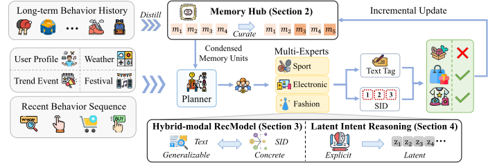
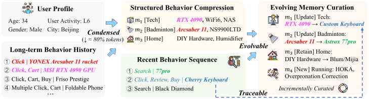
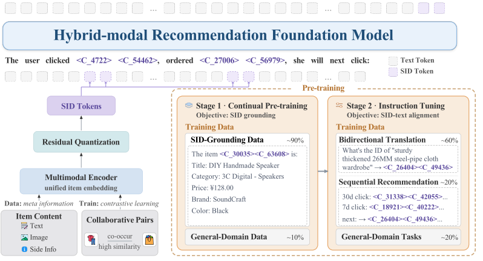
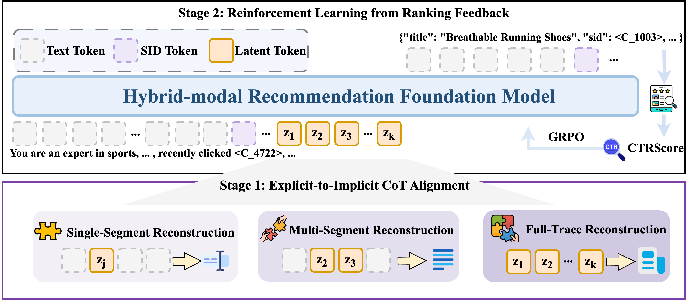
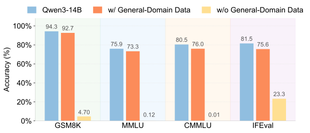
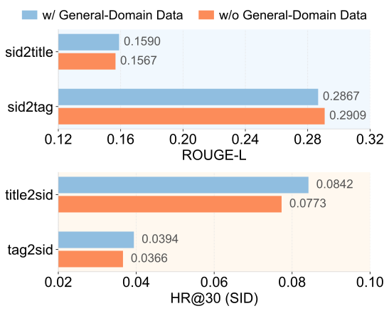
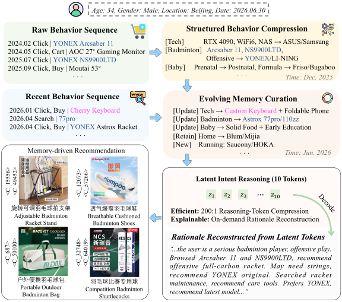

RecGPT-V3 技术报告
摘要
大语言模型（LLM）正推动推荐系统从匹配历史行为中的共现模式，转向对驱动这些行为的意图进行推理。RecGPT-V1 在淘宝率先开创了这一范式，将真正的用户理解置于流程的中心；RecGPT-V2 则通过协同的多智能体推理对其进行了扩展；二者均已部署于生产环境，并在用户体验和商业利益方面取得了持续收益。然而，在大规模运行 RecGPT 系列的过程中暴露出三个根本性挑战：（1）无状态行为建模，即每个请求都从头重新处理用户的完整历史，造成冗余计算并丢弃了先前的分析；（2）标签到物品的信息瓶颈，即自然语言标签在用户理解与物品落地之间形成了一个有损的信息通道；以及（3）低效的显式推理，其冗长的思维链带来了难以承受的延迟和计算开销。
为应对这些挑战，我们提出 RecGPT-V3，一个状态化、混合模态的推荐系统，它高效地利用自然语言进行推理以获取开放世界知识，并利用语义 ID（SID）进行具体的物品落地。 作为系统引擎，记忆中枢 维护一个结构化、持续演化的用户记忆，将长期行为提炼为浓缩的记忆单元，使用户建模计算量减少 55.8%。 为衔接推理与检索，混合模态基础模型 使 LLM 能够同时对基于文本的标签和 SID 进行联合推理，从而打通一条通往物品空间的高带宽通道。 为使推理在延迟和计算预算下变得可行，潜在意图推理 将冗长的推理依据内化为紧凑的可学习潜在词元，这些词元仍可解码为可读的解释，使输出词元成本降低 。 RecGPT-V3 部署于淘宝“猜你喜欢”信息流，在大规模在线 A/B 测试中取得持续收益：IPV 提升 +1.28%，CTR 提升 +1.00%，TC 提升 +1.97%，GMV 提升 +3.97%，同时将端到端服务资源消耗大幅削减 52.4%。 这些结果表明，LLM 可以作为工业规模业务系统的智能大脑，同时提升推荐准确性和服务效率。
1 引言
理想的推荐系统应当把握用户真正想要什么，并呈现满足该底层需求的物品。 然而在实践中，驱动当今平台的模型在很大程度上将这一目标简化为根据历史日志中的统计规律预测下一次交互。 从矩阵分解 (Rendle et al., 2009; Koren et al., 2009) 到深度序列网络 (Kang and McAuley, 2018; Tang et al., 2026)，这些模型表达能力日益增强，但它们都有一个共同的局限：它们匹配过去行为中的共现模式，捕捉哪些物品会一起出现，却不捕捉其背后的意图。 受限于此类相关性信号，它们放大了用户已经显露的偏好，缩窄了曝光范围 (Chen et al., 2023)，加剧了过滤气泡 (Nguyen et al., 2014)，并对长尾内容服务不足 (Gao et al., 2023)，这逐渐侵蚀了用户体验和推荐生态的健康。
大语言模型（LLM）的出现为突破这一局限开辟了一条有前景的路径。 借助广泛的世界知识和审慎推理 (Zhao et al., 2023; Guo et al., 2025)，LLM 能够结合上下文解读用户行为，推断每个动作背后的动机和潜在兴趣，而不仅仅是外推共现关系。 这一能力将推荐重新定义为一个关于用户意图推理的问题，这也是我们在整个工作中一直追求的方向。 RecGPT-V1 (Yi et al., 2025b) 围绕这一原则重建了工业流水线，将兴趣挖掘、物品检索和解释生成委托给 LLM，使推荐源于理解用户为何行动，而非拟合用户此前做过什么。 在此基础上，RecGPT-V2 (Yi et al., 2025a) 协调一个规划器和专门的多专家子智能体协同分析用户意图，在扩大覆盖范围的同时大幅降低成本。 两个系统均已在淘宝大规模部署，为用户、商家和平台带来了持续收益，表明 LLM 驱动的用户建模在生产中既有前景又切实可行。
尽管取得了这些收益，在大规模运行 RecGPT 系列的过程中仍暴露出三个制约进一步进展的关键挑战。
- C1
- C2
-
标签到物品的信息瓶颈。 RecGPT-V1 和 RecGPT-V2 都让 LLM 预测用户接下来可能交互的物品的自然语言标签，再由下游模型利用该标签落地具体物品。 这一文本接口在推理与检索之间形成了一个有损通道：一个粗略的标签（例如“可旋转可调羽毛球拍架”）对应一个宽泛且异构的候选物品集合，无法传达物品空间所依赖的细粒度、ID 级证据，从而在 LLM 预测的意图与最终检索到的物品之间留下了难以弥合的信息鸿沟。
- C3

为应对这些挑战，我们从三个维度改进 RecGPT-V3，即用户建模、意图表示和意图推理，目标是同时提升推荐准确性和效率。 图 2 展示了 RecGPT-V3 的整体框架，其中体现了以下三项关键技术革新。
- S1
-
记忆中枢（§2）。 我们从 无状态、一次性的用户建模 转向 状态化、记忆增强的推荐系统，它持续学习每个用户的个性化偏好，并将结构化的用户记忆作为流程的引擎置于中心。 该记忆将每个用户的长期行为历史提炼为简洁的记忆单元，将词元压缩 94.5%（浓缩），将每个单元链接回其来源行为以提供溯源（可追溯），并在新的交互到来时增量整理它们（可演化），从而对用户的理解随时间累积，而不再从头重新发现。 因此，模型利用整合后的记忆以及近期行为增量，而非原始完整历史，使用户建模计算量减少 55.8%，同时保留关键的行为上下文。
- S2
-
混合模态推荐基础模型（§3）。 为克服 标签到物品 瓶颈，我们使 LLM 能够以 语义 ID（SID）——编码物品语义的离散编码——作为自然语言之外的第二模态进行推理。 两种模态互为补充：自然语言通过丰富、开放的世界知识表达意图（可泛化），而 SID 则将该意图落地到由协同信号丰富的语义物品表示中（具体）。 因此，模型生成与下游模型原生兼容的意图表示，打通一条从意图推理到商品检索的高带宽通道，弥合了仅语言接口留下的鸿沟。
- S3
-
潜在意图推理（§4）。 我们将 冗长的显式思维链 内化为 紧凑的可学习潜在词元，将冗长的推理依据压缩为少量稠密的潜在推演步骤。 我们引入了专门的潜在 <CoT> 槽位来编码完整的推理轨迹，将其词元成本降低 200（高效）。 关键在于，这些潜在词元可按需解码回可读的推理依据（可解释），从而调和了低延迟推理与生产级推荐所要求的可解释性。
RecGPT-V3 已部署于淘宝首页“猜你喜欢”场景，这是全球最大的电商平台界面之一，服务数亿日活跃用户。 通过与线上 RecGPT-V2 系统进行大规模在线 A/B 测试，RecGPT-V3 在参与度和商业指标上均取得显著提升，包括 +1.28% IPV、+1.00% CTR、+1.97% TC 和 +3.97% GMV，同时将端到端服务计算量降低 52.4%。 更广泛地说，RecGPT-V3 表明大语言模型能够以低成本驱动现实世界的工业流水线，使推荐应用回归其创立初衷：忠实理解并服务每一位用户真正所需。
2 记忆中枢
在 RecGPT-V2 流程中，全局规划器分析用户的行为历史，将其分解为意图画像，并分派给多专家模块进行物品标签预测和检索。由于它在每一轮都重新处理完整的行为序列（对于高活跃用户为 55K 个词元），仅规划器一项就占了智能体意图分析中计算成本的 95%，而每一轮都会冗余地重新发现诸如复购周期、品牌忠诚和季节性变化等本可跨会话持久保存并更新的模式。为解决这一问题，我们引入了 记忆中枢，这是一个持久化、结构化的记忆层，将规划器的输入从无状态的完整序列编码转变为状态化的记忆驱动推理，同时实现三个特性：
-
•
浓缩：将完整的行为序列整合为一小组模式定义的记忆单元，实现 80% 的词元缩减，同时仅保留连贯、高置信度的行为模式。
-
•
可追溯：保留从每个记忆单元到其来源行为的溯源链接，在保持下游推荐质量的同时实现可解释性。
-
•
可演化：通过选择性更新和新模式提取增量纳入新行为，而无需完全重新编码。
记忆中心通过两种机制构建并维护这一记忆：结构化行为压缩（§2.1）将每位用户的完整历史行为序列初步整合为结构化记忆单元，而演化式记忆策展（§2.2）则通过定期整合新观测到的行为使该记忆保持时效。两者共同将全局规划器的总体计算量降低55.8%，同时保持推荐质量。图3给出了记忆中心架构的概览。

2.1 结构化行为压缩
结构化行为压缩将用户的完整行为序列整合为一组紧凑的结构化记忆单元，其中包含。形式上，我们将这一过程定义为基于LLM的记忆构建函数：
| (1) |
该过程作为一次初始处理运行一次，生成持久化记忆，作为后续增量更新（§2.2）的基础。每个单元以两个核心字段为中心，二者共同刻画一种行为模式。第一个是行为模式标识符，它是从涵盖主要电商行为原型的数百种模式的预定义分类体系中选取的类别标签，当没有现有模式能够刻画高置信度聚类时，允许受控扩展。第二个是偏好摘要，用自然语言描述用户在该模式下的偏好、趋势和消费特征。作为对这两个字段的补充，每个单元还记录支撑性元数据：用于溯源的代表性行为索引、偏好品牌、时间活动画像以及时间戳。表1展示了一个完整示例。
| Field | Example |
| Behavior Pattern | K-pop Fandom |
| Preference Summary | Dedicated fan of a K-pop girl group. Full-lifecycle engagement from album pre-orders to merchandise collection and live concert participation. Strong focus on collection completeness and item preservation. |
| Representative Indices | 549, 553, 558, 563, 564, 565, … |
| Preferred Brands | SingBA, 时代良品, 珍琢, … |
| Temporal Activity | First appeared March 2023; peaked June and Aug–Oct 2023. |
| Timestamp | Created: 2023-10-31 |
| Unit | Pattern () | Summary at | Summary at | Operation |
| Infant Care | Frequent buyer of formula, diapers, and baby clothing for 0–6 months. | Shifted to 6–12 months. Added toddler toys and walkers. | (1) Update | |
| Outdoor Running | Running shoes, GPS watches, and marathon nutrition supplements. | (Unchanged) | (1) Retain | |
| Home Cooking | Budget-friendly kitchen gadgets and baking supplies. | Shifted toward premium cookware and air fryer accessories. | (1) Update | |
| Photography | Mirrorless camera accessories and lens filters. | (Unchanged) | (1) Retain | |
| Pet Parenting (new) | — | Pet food and grooming supplies. First-time pet owner. | (2) New |
2.2 演化式记忆策展
结构化行为压缩（§2.1）建立了初始记忆状态，但随着偏好的产生、衰减以及随人生阶段和季节变化而转移，用户兴趣会随时间漂移。静态记忆会逐渐偏离用户并削弱推荐相关性。演化式记忆策展通过定期增量更新将新观测到的行为纳入现有记忆，以对抗这种漂移。随后，全局规划器基于这一紧凑记忆以及近期行为增量进行推理，而不是在每次处理时重新编码完整行为序列，从而大幅减少用户建模计算。
具体而言，令表示由初始压缩或此前策展周期在时间产生的记忆状态，令表示区间内新累积的行为交互。演化式记忆策展将增量更新函数定义如下：
| (2) |
其中表示经选择性更新或保留后的现有记忆单元集合，表示从先前未匹配行为中提取的新建记忆单元集合。最终策展后的记忆通过合并这两部分获得。按照设计，在运行时不访问完整序列，仅依据压缩记忆和新增量。
（1）现有单元的选择性更新。
对于每个现有记忆单元，模型判断新行为增量是否包含与该模式相关的交互：
| (3) |
其中表示新行为中与语义相关的子集，表示分配给现有记忆单元的所有新行为的并集。当触发时，更新操作会刷新该单元的摘要及所有支撑性元数据；否则，该单元保持不变。这一选择性策略遵循有证据则更新，无扰动则保留的原则。由此得到的已更新或已保留记忆集合为：
| (4) |
（2）新模式提取。
选择性更新未分配给任何现有单元的交互构成新行为集合：
| (5) |
新模式提取在同一策展函数（式2）内执行。给定先前记忆和新行为增量，识别出一致连贯的未匹配行为，并将其写入新的记忆单元：
| (6) |
若未识别出一致连贯的新模式，则。
最终记忆将选择性更新所保留或更新的现有单元与这些新提取的单元合并：
| (7) |
在实践中，这两种操作共享一次模型前向传播，联合更新现有单元并提取新单元，从而使流水线免于多次顺序调用。
语义连续性。
每次选择性更新都会将受影响的单元重新合成为用户当前状态的一致连贯快照，而不是将新行为追加到旧摘要上，从而防止过时偏好和新出现的偏好在同一单元内累积。如表2所示，随兴趣成熟从“0–6个月”变为“6–12个月”，且转向高端厨具，而未受影响的单元（、）保持不变，一项首次出现的兴趣形成了新单元。
综上所述，记忆中心将每位用户的原始行为序列转化为结构化、持续演化的记忆，作为推荐流水线的引擎。系统不再在每次请求时从完整交互历史中重新推导用户理解，而是基于这一紧凑、高信噪比的记忆以及近期行为增量进行推理，使其对用户的理解随时间不断积累和精炼。在生产环境中，增量策展每两个月运行一次，使用户建模的总体计算量降低55.8%。详细的效率分析与质量验证见§5.2。
3 混合模态推荐基础模型
纯文本LLM专家通过单一自然语言通道与离散物品空间交互：它们预测自由形式的物品标签，再由下游检索器将这些标签落地到域内物品。这种间接方式使标签成为推理与检索之间的有损瓶颈：诸如“用于马拉松训练的轻量跑鞋”这样的粗粒度标签会匹配宽泛且异构的物品集合，无法传达检索所依赖的细粒度、物品级证据，从而削弱了模型所表达的意图与最终呈现的物品之间的耦合。
为克服这一瓶颈，我们提出了混合模态推荐基础模型，它在Qwen3-14B(Yang et al., 2025)主干的基础上，将语义ID（SID）——编码物品语义的离散码——作为与自然语言并列的第二模态加以扩展。推荐本质上既需要对用户意图进行推理，又需要将其落地到具体物品上，这种双重需求无法由任何单一表示独立满足。因此，这两种模态是互补的，各自应对该需求的一个侧面：
-
•
可泛化：自然语言通过丰富、开放的世界知识表达意图。
-
•
具体化：SID将该意图落地到由协同信号增强的物品表示上。
通过将两种模态纳入统一词表，模型输出的是与检索兼容的标识符而非粗粒度标签，从而打开通向物品空间的高带宽通道，同时保留其完整的自然语言能力。图4展示了整体流水线，包括两个组件：构建语义有据SID的混合词元化方案（§3.1），以及随后将这些词元落地到语言中并使模型具备对SID与文本联合推理能力的两阶段训练流程（§3.2）。

3.1 混合词元化
混合词元化用源自物品内容的语义ID词元扩充LLM的原生文本词表，使语义相似的物品获得相似的编码。构建这些SID遵循我们此前的FORGE框架(Fu et al., 2026)：我们首先通过对比学习学习具有判别性的多模态物品表示，然后通过残差量化（RQ-VAE）(Lee et al., 2022; Chen et al., 2026)将其量化为离散的层次化编码。下面我们逐一详述。
多模态物品表示。
这一阶段的目标是通过融合每个物品的文本、图像和辅助信息，为其获得统一且具有判别性的嵌入。由于没有显式标签定义物品相似性，我们直接从行为中挖掘正样本对：在行为日志中频繁共现的物品构成候选对，再从其中剔除多模态相似性低的物品对，以防虚假共现。保留下来的物品对用于监督对比学习。
具体而言，对于每个物品，我们提取其文本描述、图像信息和辅助旁路信息（例如物品属性和元数据）。我们采用CN-CLIP(Yang et al., 2022)（记为）编码每种模态，由输入决定调用哪个塔：和，而辅助信息先转换为文本形式再编码，得到。这些模态特定特征通过Q-Former(Li et al., 2023)（记为）融合，生成统一的物品表示：
| (8) |
在训练中，我们将物品作为正样本，将同一批次内的其他物品作为负样本，优化一个在融合层和模态特定层同时起作用的基于InfoNCE的损失：
| (9) |
其中表示InfoNCE损失函数(Radford et al., 2021)。正是这一对比目标使后续量化得以稳定：它所产生的分离良好的嵌入空间可防止RQ-VAE否则容易出现的码本坍缩。
残差量化。
给定多模态物品表示，我们应用RQ-VAE将每个物品映射为离散编码序列，这些编码构成其语义ID。在最终配置中，我们采用两级码本结构，每级的词表大小为32,768。这总共产生65,536个新词元（记为<C_0>到<C_65535>），被加入模型词表。一个物品的完整SID由两个码本条目组成，例如<C_18921><C_40222>，其中第一个词元表示粗粒度语义簇，第二个在该簇内提供细粒度区分。这种两级设计使新增词表规模保持在可控范围内，同时保留细粒度的物品区分：由于相关物品共享其粗粒度编码，物品空间中的语义相似性在SID空间中表现为共享前缀，模型可利用这一结构在相关物品间泛化。
3.2 预训练
新的SID词元被追加到原始Qwen3-14B词表中，其嵌入随机初始化并在训练中学习。为使模型理解并生成这一混合词表，我们采用两阶段流程：持续预训练（§3.2.1），将SID词元落地到物品语义中；随后是指令微调（§3.2.2），教模型在各种推荐任务中应用这些词元。贯穿始终的核心关切是在注入领域知识的同时不侵蚀模型已有的通用能力，我们通过精心构建数据和策略性混合来实现这一平衡。
3.2.1 持续预训练
持续预训练追求两个目标：❶ 将新增的 SID 词元建立在自然语言空间之中，使模型能够在上下文中理解并生成它们；以及 ❷ 保留主干模型已有的通用能力。因此，我们的语料库由两个互补的部分组成：SID 锚定数据，它将每个 SID 与其所表示条目的内容相关联，教会模型直接从这些词元中读取条目语义；以及 通用领域数据，用于防止灾难性遗忘。
SID 锚定数据。
我们将每个 SID 锚定样本构造为一段自然语言陈述，将条目的语义 ID 与其文本属性（如标题和类目）配对，使模型学会仅凭 SID 恢复条目的内容。例如，以下样本将 SID <C_18921><C_40222> 与该条目的标题和类目关联起来：
示例：SID 锚定样本
语义 ID 为 <C_18921> <C_40222> 的条目具有以下信息：
标题：Insulated Lock Rod Insulated Construction Scaffolding Electrified Insulation High Voltage Electric Power Frame。
类目：Scaffolding。
这一阶段为模型赋予了 SID 词元的可用语义，使得指令微调能够作用于模型已经理解的标识符，而非不透明的符号。
通用领域数据。
若主要基于 SID 锚定数据进行训练，会有灾难性遗忘下游部署所依赖的通用能力的风险。因此，我们在语料中混入约 10% 的通用领域文本，涵盖数学推理、代码、科学文献、医学文本和指令遵循数据。
3.2.2 指令微调
在持续预训练之后，我们进行指令微调，以教会模型在各种对齐任务中应用 SID 词元。我们将这些任务组织为三类：❶ SID 与文本之间的双向翻译，❷ 直接在 SID 空间中进行的序列推荐，以及 ❸ 保持模型已有能力的通用领域任务。表 3 总结了前两类的 SID 相关任务。下面我们详细说明每一类任务。
SID–文本双向翻译。
这一族任务在 SID 与其文本描述之间进行双向映射，连接条目标题（title sid）、搜索查询（tag sid）和商品（sid cmd）。覆盖两个方向使模型既学会从 SID 读取条目的语义，又反过来为给定描述生成正确的 SID。
序列推荐。
sid sid 任务将序列推荐完全置于 SID 空间中进行。给定按多粒度时间窗口（例如，3 天、2 天、1 天、12 小时、1 小时）组织的用户点击历史，模型预测用户接下来将点击的 SID。该任务仅作用于 SID 词元而没有任何文本条目描述，为模型已通过这些词元内化了协同过滤信号提供了最直接的证据。
通用领域任务。
为保持模型通用文本能力的完整，约 20% 的指令微调数据 由开放域监督任务组成，例如自然语言推理、实体抽取和电商相关任务。该比例经过校准，以保持指令遵循的忠实度——尤其是生成格式良好的 JSON 输出并遵守复杂的多约束提示——同时不稀释推荐专用的训练信号。
| Task | Mapping | Description | Proportion |
| sid2title | sid title | Generate the item title given an SID. | 13.8% |
| title2sid | title sid | Predict the SID given an item title. | 14.7% |
| sid2tag | sid tag | Generate a natural-language tag given an SID. | 11.5% |
| tag2sid | tag sid | Predict candidate SIDs given a text tag. | 6.2% |
| sid2cmd | sid cmd | Predict the commodity category given an SID. | 13.8% |
| sid2sid | sid sid | Predict next-click SIDs given a user’s click history. | 20.0% |
4 潜在意图推理
显式思维链推理已成为基于 LLM 的推荐系统解读用户行为、揭示隐式兴趣的常用方法，通过多步推敲有效提升预测准确率。然而这种质量代价高昂：自回归生成数千个词元的推理过程，其长度远超最终输出，所带来的延迟与计算成本在十亿用户规模和高 QPS 下变得难以承受。这引出一个自然的问题：能否在不付出其词元成本的情况下保留推敲式推理带来的收益？
我们以 潜在意图推理 回答这一问题，它将冗长的推理过程内化为一段简短的可学习潜在词元序列，具有两个特性：
-
•
高效：将数千个顺序解码步骤组成的推理过程压缩为少量潜在词元，把成本从缓慢的自回归解码转移到可并行化的预填充，将推理词元成本降低 200，并大幅降低推理延迟。
-
•
可解释：与不透明的潜在表示不同，这些词元在需要时可以解码回忠实、人类可读的推理过程，保留了潜在推理通常为速度而牺牲的可解释性。
为赋予这些无需监督的词元以推理语义，我们首先形式化潜在推理机制：一种将冗长的显式推理过程压缩为少量潜在词元的压缩方案，以及监督这些词元忠实编码其所替代推理的多任务对齐目标（§4.1）。随后，我们通过一套完整的两阶段后训练流程实现这种内化，该流程从强教师模型中蒸馏推理，并利用由在线反馈驱动的强化学习对其进行精炼（§4.2）。图 5 给出了概览。

4.1 推理内化
推理模型以 为输入，即 Global Planner 分配的 人设 连同用户近期的点击历史，其中每个被点击的条目由其语义 ID 和简短标题表示。以 为条件，一个显式 CoT 模型（例如，在我们的实验中为 DeepSeek-V3.2 (Liu et al., 2024)）首先生成推理过程 ，它由 个换行分隔的步骤组成，然后生成输出条目标签 ，将联合分布分解为
| (10) |
然而，承载这些推理收益的推理过程 也正是成本集中的地方：其 个步骤被自回归解码，且长度通常远超输出 ，使 成为主要的效率瓶颈。因此，我们将 内化为简短的可学习潜在槽位 ，满足 ，作为词表新词元引入，其嵌入随机初始化。这将式（10）中的显式分解替换为其潜在对应形式，
| (11) |
还需说明 与隐式推导过程之间的关系。我们采用确定性的位置划分：将推理过程 切分为 个连续、不重叠的片段 ，每段至多 步，潜在词元 编码片段 。潜在词元数量遵循：
| (12) |
此处 设定每个潜在词元的粒度， 越大则将越多推理步骤折叠进单个词元；而 限制序列长度，从而约束推理成本。当推理过程少于 步时，末尾的潜在词元对应较短或空的片段；当其超出该预算时，覆盖在最初的 个片段处停止。
| Task | Input: context | Target: masked segments |
|
Single-Segment
|
Serious badminton player who favors full-carbon rackets and premium grips. <cot2> Keep the 10 most specific tags and drop broad category terms. | <cot2> : From recent clicks, enumerate rackets, strings, grips, and court shoes. |
|
Multi-Segment
|
<cot1> From recent clicks, enumerate rackets, strings, grips, and court shoes. <cot3> | <cot1> : Serious badminton player who favors full-carbon rackets and premium grips. <cot3>: Keep the 10 most specific tags and drop broad category terms. |
|
Full-Trace
|
<cot1> <cot2> <cot3> | Serious badminton player who favors full-carbon rackets and premium grips. From recent clicks, enumerate rackets, strings, grips, and court shoes. Keep the 10 most specific tags and drop broad category terms. |
潜在词元预热。
随机初始化的潜在嵌入远远落后于预训练词元嵌入：它们位于预训练嵌入分布之外，且尚不携带语义。为将它们校准到与语言词元兼容的表示空间，我们随机选择推理过程 中的一个或多个连续片段，将每个片段替换为潜在词元，形成混合推理过程 ，并针对混合序列 优化标准自回归目标，
| (13) |
其中 索引保留下来的文本词元，潜在位置仅作为上下文贡献。根据周围文本预测每个被掩码片段，将潜在嵌入拉入预训练的表示空间，并赋予其粗略的上下文语义，为后续的片段级对齐提供了条件良好的初始化。
多粒度对齐。
预热阶段在表示层面校准了潜在嵌入，但并未确定每个潜在槽位应保留什么信息。位置划分将片段 分配给潜在词元 仅是一种结构性对应；这种对应必须转化为可学习的信息约束。我们通过多粒度的掩码重建来实例化这一约束。给定掩码索引集 ，我们构造一个混合序列，将未掩码片段保留为文本，同时将每个被掩码片段替换为其潜在词元，形式化如下：
| (14) |
并且，在标明需恢复哪些位置的任务专用指令提示 的引导下，训练模型从该上下文重建被掩码的片段 ：
| (15) |
每个任务的提示模板见附录 C。 三个任务仅在 的抽取方式上不同，范围从单个潜在词元逐步扩大到整个序列（如表 4 所示）：
-
•
单片段重建（）。我们将单个片段 隐藏在其潜在词元 之后，同时保留推理过程的其余文本，模型重建 。丰富的周围上下文使这一重建较为容易，因此最小化 将每个潜在词元锚定在其自身片段中，产生直接的逐位置编码信号。
-
•
多片段重建（，）。我们同时将若干片段隐藏在其潜在词元之后，模型仅恢复被掩码的文本 。由于被掩码的跨度可能跨越片段边界，最小化 促使每个词元与周围文本一起保持信息量，而非孤立地保持信息量。
-
•
全推理过程重建（）。我们掩码所有片段，于是上下文缩减为 ，目标变为 。这迫使潜在序列仅凭 就足以恢复完整的推理链。
除压缩之外，重建目标还保持了潜在推理的可解码性。由于 被训练为 的充分编码，模型能够从 恢复出人类可读的推理过程，以低得多的词元成本保留显式 CoT 的透明度。附录 C 提供了展示潜在词元如何对应显式推理链的案例。
4.2 后训练
本节详述为 RecGPT-V3 赋予潜在推理能力的后训练流程，分两个阶段进行：（1）显式到隐式 CoT 对齐（§4.2.1）从强教师模型中将推理蒸馏为显式推理过程，然后通过 §4.1 的多任务课程将其压缩为潜在词元；（2）基于排序反馈的强化学习（§4.2.2）直接针对在线业务目标优化潜在模型。
4.2.1 阶段 1：显式到隐式 CoT 对齐
在该训练阶段，我们首先从强教师模型蒸馏推理，得到显式 CoT 轨迹，然后通过 §4.1 的多任务课程将其压缩为潜在词元。
| Task | Prop. |
| ❶ Reasoning alignment | 21.43% |
| Single-segment recon. | 6.45% |
| Multi-segment recon. | 6.56% |
| Full-trace recon. | 8.42% |
| ❷ General reasoning | 69.58% |
| ❸ Tag prediction | 8.43% |
(1) 推理蒸馏。
我们通过在强教师模型的显式 CoT 输出上微调模型来蒸馏推理。这些思考过程有效但低效，平均约 2,300 个词元，因此主导了整体推理成本。
(2) 潜在内化。
4.2.2 阶段 2：基于排序反馈的强化学习
监督阶段仅模仿教师轨迹，无法优化业务目标。现有 RecGPT-V2 (Yi et al., 2025a) 采用基于 HitRate 的准确率奖励，即用户留出的真实物品中由其输出检索到的候选所覆盖的比例，但这一离线代理存在两个局限。(1) 奖励稀疏：在 GRPO 风格的目标下，同一组内的 rollout 可能获得相同奖励，使其优势坍缩为零，从而不产生学习梯度。(2) 流程不一致：由于输出必须经过服务流程才能到达用户，在流程之外计算的奖励可能与实际下游表现不一致。
为解决这两个局限，我们提出 基于排序反馈的强化学习（RLRF），其核心思想是直接从决定用户最终所见内容的生产排序模型中获取奖励，从而得到既稠密又与 serving 流程一致的信号。具体而言，我们将 HitRate 准确率奖励替换为 CTRScore，后者从该下游排序模型读取。对于生成输出 ，其中包含 个物品标签，我们用 检索候选物品，用生产排序模型对每个候选打分，并对前 个分数取平均：
| (16) |
其中 是检索到的物品中第 大的 CTRScore（我们的实验中 ）。该设计应对了上述两个局限：对前 个排序分数取平均，将稀疏的 HitRate 信号变为稠密信号；而奖励从生产排序模型读取，使训练与输出实际经过的流程保持一致。因此，当某输出检索到的物品受到下游排序器青睐时，该输出恰好获得高奖励，从而将策略引导至流程更可能呈现给用户的候选。
对于其余奖励项，我们保留 RecGPT-V2 的 约束奖励塑造（CRS） 框架，该框架将 对齐分数、多样性分数 和 长度分数 视为主奖励的质量约束：仅当三个阈值均满足时， 才会传播。 对齐分数由在人类偏好对上训练的奖励模型产生，用于评估每个预测标签满足人类质量标准的程度。 最终奖励形式如下：
| (17) |
其中 、 和 分别为对齐、多样性和长度阈值；这些术语的定义请读者参阅 RecGPT-V2。我们使用 GRPO (Shao et al., 2024) 优化策略，对每个输入采样的一组输出计算组相对优势。
5 实验
我们在淘宝首页推荐场景中评估 RecGPT-V3，该场景服务数亿日活跃用户。我们的评估涵盖五个维度：(1) 针对 RecGPT-V2 基线的整体在线 A/B 测试结果（§5.1）；(2) 通过人工标注和计算效率分析进行的记忆中心评估（§5.2）；(3) 在通用能力保持、SID-文本对齐和下游推荐质量方面的推荐基础模型评估（§5.3）；(4) 通过训练后效果和推理效率分析进行的潜在推理评估（§5.4）；以及 (5) 关于 SID 模态的进一步分析和案例研究（§5.5）。
5.1 在线 A/B 测试结果
实验设置。
我们在淘宝首页“猜你喜欢”场景中部署 RecGPT-V3，并按以下配置开展在线 A/B 测试：
-
•
流量分配：实验组和对照组各获得平台总流量的 1%，在将部署风险降至最低的同时获得统计显著的结果。
-
•
基线：RecGPT-V2 作为对照组，以便直接评估 RecGPT-V3 带来的改进。
-
•
评估场景：我们在两个互补范围内分别评估性能：
-
–
物品场景：以网格布局呈现的直接物品推荐。
-
–
信息流场景：主信息流中的混合内容推荐流，包含物品、广告、直播及其他内容类型。
-
–
评估指标。
我们从两个维度评估系统性能：
用户参与度：
-
•
IPV（物品页浏览量）：物品详情页访问次数，反映用户兴趣。
-
•
CTR（点击率）：点击量与曝光量之比，衡量推荐相关性。
-
•
PV（页面浏览量）：页面浏览总量，指示整体浏览活动。
-
•
DAU（日活跃用户）：每日去重活跃用户数，衡量平台活跃度。
业务交易：
-
•
TC（交易数）：完成的交易数量，反映转化效果。
-
•
GMV（商品交易总额）：交易的总金额，衡量整体业务价值。
| Scenario | User Engagement | Business Transaction | ||||
| IPV | CTR | PV | DAU | TC | GMV | |
| Item | +3.08 | +0.98 | +2.02 | – | +3.10 | +7.51 |
| Feed | +1.28 | +1.00 | +0.83 | +0.56 | +1.97 | +3.97 |
注：– 表示该指标在给定场景中不适用。
结果与分析。
表 6 总结了在线 A/B 测试结果。在两个评估场景中，RecGPT-V3 在所有指标上均持续优于 RecGPT-V2。
在物品场景中，提升更为明显：IPV +3.08%，CTR +0.98%，PV +2.02%，TC +3.10%，GMV +7.51%。这一模式表明，RecGPT-V3 改善物品级推荐并不只是吸引更多点击，因为 IPV、TC，尤其是 GMV 的相对更强增长表明，用户在曝光后更可能进入商品详情页、完成交易并产生更高交易额。这意味着检索到的候选不仅在点击阶段更相关，也与用户的购买导向意图更一致。
在反映整体平台体验的信息流场景中，RecGPT-V3 带来 IPV +1.28% 和 CTR +1.00%，表明推荐相关性和用户参与度有所提升。浏览活动上升 PV +0.83%，平台留存显示出健康增长，DAU +0.56%，证实改进覆盖广泛用户群，而非集中于狭窄子集。交易指标也大幅改善，GMV 增长 +3.97%，TC 增长 +1.97%，表明更强的意图理解直接转化为购买活动。
5.2 记忆中心评估
我们通过两项互补分析评估 §2 中引入的记忆中心：用人工标注验证记忆表示准确性（§5.2.1），以及计算效率分析（§5.2.2）。在所有实验中，记忆中心条件用压缩记忆表示加上近期行为增量替代全局规划器的全序列输入，同时保持下游组件完全相同。
5.2.1 记忆质量评估
| Evaluation Target | Annotations | Accuracy |
| Behavior Pattern | 2,514 | 82.89% |
| Behavior Index | 21,268 | 95.27% |
5.2.2 计算效率
| System | Component | Cost |
| RecGPT-V2 | Full sequence | |
| RecGPT-V3 | Per-inference | |
| Memory curation | ||
| Total | 44.20% |
5.3 基础模型评估
我们从两个问题评估混合模态基础模型：(1) 尽管进行了领域特定训练，模型是否保持强大的通用语言能力（§5.3.1）？(2) 模型是否实现准确的跨模态 SID–文本对齐，并将其转化为强大的下游推荐质量（§5.3.2）？为了厘清通用领域数据混合的贡献，我们在全文中比较两个模型变体：
-
•
含通用领域数据：从 Qwen3-14B 初始化，并使用 SID 接地数据和通用领域数据训练。
-
•
不含通用领域数据：架构和 SID 接地数据相同，但移除所有通用领域数据。
5.3.1 通用能力保持
为回答混合模态基础模型是否保持通用语言能力，我们在四个代表性基准上评估其准确率，涵盖数学推理（GSM8K）、广泛知识（MMLU）、中文语言理解（CMMLU）和指令遵循（IFEval）。

如图6所示，通用领域数据混合保留了主干模型的绝大部分能力。GSM8K 仅下降 1.66%（94.31% 92.65%），MMLU 为 2.65%，CMMLU 为 4.49%，IFEval 从 81.52% 降至 75.60%。反之，移除通用领域数据会导致灾难性崩溃。w/o General-Domain Data变体在 GSM8K 上降至 4.70%，在 MMLU 上降至 0.12%，在 CMMLU 上降至 0.01%，在 IFEval 上降至 23.29%，并几乎丧失所有推理、知识和指令遵循能力。因此通用领域数据至关重要。没有它在持续预训练和指令微调期间提供的正则化，模型会过拟合于领域特定模式，并丧失实际部署所需的通用能力。
5.3.2 SID 对齐与推荐质量

我们从两个相互关联的维度评估基础模型：SID 与文本之间的跨模态对齐，以及下游推荐质量。对齐在四个双向任务（sid2title、sid2tag、title2sid、tag2sid）上测量，其中两个生成任务采用 ROUGE-L，两个预测任务采用 HR@30（SID）。下游质量在三个维度上测量：标签多样性（每用户平均唯一标签数）、类目覆盖（将标签映射到淘宝类目体系后的不同商品类目数）以及类目级 HR@30（两周内相对实际点击的命中率）。
除缓解主干模型通用能力的灾难性遗忘（§5.3.1）之外，通用领域数据还保持了 SID–语言对齐并提升了下游推荐质量。图 7 显示，两个变体之间的全部四项对齐指标基本保持不变，表明混合通用领域数据不会损害从 SID 接地数据中学到的 SID 到文本映射能力。表 9 进一步表明，这种数据混合使类目级 HR@30 提升 （），同时在标签多样性和类目覆盖上取得相当增益，通过基于内容和上下文感知的用户意图理解，将保留的通用能力转化为实质更强的下游性能。总体而言，这些结果证明了有意整合通用领域数据的合理性：它保持语义对齐优势，保留主干的通用知识，并将二者转化为更强的下游性能。
| Model | Avg. #Tags | Avg. #Categories | HR@30 (Category) |
| w/ General-Domain Data | 28.77 | 41.73 | 0.3050 |
| w/o General-Domain Data | 23.88 | 32.49 | 0.2250 |
5.4 潜在推理评估
我们从两个角度评估潜在推理模块（§4）：（1）训练后有效性，考察每个训练阶段和 RL 如何贡献于推荐质量；（2）推理效率，比较显式推理与潜在推理的计算成本。
5.4.1 训练后有效性
我们逐步添加训练阶段，以考察它们各自对推荐质量的贡献。表 10 报告两项指标：HR@30（Category），即 top-30 预测中的类目级命中率；以及 CTR，即模型输出所检索到的 top-100 商品的平均 CTR。我们比较两组模型变体：第一组基于 Qwen3-14B，评估仅凭原生推理能否在无领域特定训练的情况下提升推荐（CTR 不适用，因为这些变体未接入在线反馈流水线）；第二组构建于混合模态基础模型（§3）之上，逐步添加推理组件。
-
•
Qwen3-14B：不含推理的基础语言模型，直接从提示生成输出。
-
–
+ 原生推理：在推理时启用 Qwen3 内置的思维链。
-
–
-
•
混合模态基础模型：经过预训练后的基础模型，不含推理。
-
–
+ 显式 CoT（SFT）：使用从 DeepSeek-V3.2 蒸馏的推理轨迹进行监督微调。
-
–
+ 潜在推理：将显式推理内化为 10 个潜在词元，采用多任务课程（§4.1）。
-
–
+ RL：在潜在推理之上应用 RL（完整的 RecGPT-V3）。
-
–
在 Qwen3-14B 上，启用原生思维链仅带来边际的 HR@30 提升（0.2347 对 0.2276），证实无领域特定训练的推理收益有限。在混合模态基础模型上，显式 CoT 将 HR@30 从 0.3050 提升至 0.3508，表明结构化推理能够实现更精确的意图理解。潜在推理达到相当的质量（HR@30 为 0.3462，CTR 为 0.0649），同时将 2,700 个推理词元压缩为仅 10 个潜在词元。借助 RL，性能进一步提升至 0.3693（HR@30）和 0.0679（CTR），在两项指标上均超过显式 CoT。
| Setting | HR@30 (Category) | CTR |
| Qwen3-14B | 0.2276 | – |
| + Native Reasoning | 0.2347 | – |
| Hybrid-modal Foundation Model | 0.3050 | 0.0624 |
| + Explicit CoT (SFT) | 0.3508 | 0.0638 |
| + Latent Reasoning | 0.3462 | 0.0649 |
| + RL | 0.3693 | 0.0679 |
5.4.2 推理效率
显式思维链的一个关键实际问题是其计算开销：每样本生成 2,840 个推理词元会显著增加推理延迟，因为每个词元都需要顺序自回归解码。潜在推理通过将推理过程压缩为 10 个潜在词元来解决这一问题，将计算成本从缓慢的顺序解码转移到可并行的预填充计算。 表 11 在相同硬件下于 1,000 个样本的基准上量化了这一优势。潜在推理模型将每样本输出长度从 2,840 个词元降至 122 个词元（减少 95.7%），带来 3.46 的端到端加速（1,020 秒 295 秒）。同时，输入吞吐量从每分钟 166K 个词元提升至 498K 个词元，证实瓶颈已有效从输出解码转移到输入预填充。结合表 10 所展示的相当推荐质量，潜在推理在生产部署中实现了有效性与效率之间的良好权衡。
服务成本分析。
在输入和输出中均使用语义 ID（SID），并结合潜在意图推理，会增加上下文长度，从而相比 RecGPT-V2 专家模型给专家模型引入 15% 的计算开销。然而，这一局部开销被全局规划器带来的系统级节省所抵消，在当前部署中全局规划器的计算成本约为专家模型的 20 倍。借助记忆机制将规划器侧计算减少 55.8%，加权后的总体资源节省达到 52.4%。
| Mode | Output Length. | Input TPM | Output TPM | Total Time (s) |
| Explicit CoT | 2,840 | 166K | 531K | 1,020 |
| Latent Reasoning | 122 | 498K | 66.7K | 295 (71.1%) |
5.5 进一步分析
在上述定量评估之外，我们提供两项进一步分析以给出更深入的见解。我们首先考察文本标签和 SID 作为双重检索模态的互补作用（§5.5.1），然后展示说明核心模块在实践中如何协同的案例研究（§5.5.2）。
5.5.1 SID 模态分析
混合模态基础模型同时生成文本标签和 SID 作为互补的意图表示（§3）：文本标签通过开放式世界知识提供可泛化的类目级覆盖，而 SID 将用户兴趣接地于具体的协同语义。我们从三个角度验证这一设计：文本标签的覆盖广度与 SID 的用户特异性、它们在嵌入空间中的多样性，以及它们在端到端检索中的互补性。
覆盖广度与用户特异性。
在每次推理中，专家模型为给定用户生成 个文本标签 ，并为每个标签生成 个 SID 。我们将每个文本标签 映射到一个商品类目集合 ，并将其共同生成的 SID 类目聚合为 。我们定义平均类目广度 和跨用户重叠度 来刻画每种信号类型：
| (18) |
| (19) |
| Metric | Text Tag | SID |
| Category Breadth | 1.40 | 0.84 |
| Cross-User Overlap | 11.36% | 4.61% |
其中 度量平均覆盖的不同类目数， 度量随机采样的用户对 之间类目集合的期望重叠。结果报告于表 12。 在类目广度上， 而 。即使为每个标签聚合 个 SID，合并后的类目集合仍比单个文本标签更窄。这证实了文本标签更广的覆盖范围，其跨越多样化的兴趣范围，而 SID 则更窄地聚焦于特定类目簇。 在跨用户重叠度上， 相较于 。SID 显著更低的重叠反映其更强的用户特异性，因为协同语义捕捉用户特定信号，而文本标签更高的重叠源于其对共享世界知识的依赖。

嵌入空间可视化。
我们进一步考察通过文本标签与 SID 检索到的商品的多样性。对于每个文本标签及其共同生成的 SID，我们采样等量的相关商品，并从预训练检索模型获取其嵌入。如图 8 所示，我们通过 PCA 将这些嵌入投影到 2 维。标签匹配的商品在不同区域展现出更大的空间分散性，而 SID 匹配的商品则围绕特定邻域形成更紧密的簇。这一模式直观地强化了文本标签由世界知识驱动的覆盖性与 SID 由协同驱动的特异性之间的对比。
| Configuration | HR@500 | HR@1000 |
| Tag | 0.1503 | 0.2044 |
| SID | 0.1539 | 0.2144 |
| Hybrid | 0.1571 | 0.2168 |

检索互补性。
5.5.2 案例研究
图 9 展示了 RecGPT-V3 在一个匿名淘宝用户上的端到端案例研究。记忆中心首先将原始行为序列压缩为结构化偏好单元，例如科技、羽毛球和育儿兴趣。当近期行为到达时，它选择性地更新相关记忆：定制键盘交互刷新科技单元，Astrox 相关搜索和点击更新羽毛球单元，育儿兴趣向固体食物和早期教育演变，稳定的家居改善偏好被保留，并新建一个跑步偏好。
基于整理后的记忆，RecGPT-V3仅使用10个潜在词元执行潜在意图推理。这些潜在词元在推理阶段替代了冗长的显式CoT，但仍可按需解码以重建可读的显式推理依据。在此案例中，重建的推理依据将该用户识别为一名具有进攻型打法的重度羽毛球爱好者，并推断出其对全碳素球拍、拍线、保养工具及相关羽毛球装备的需求。这些推断出的意图随后被落地为带有SID的具体记忆驱动推荐。该案例展示了RecGPT-V3如何通过不断演化的记忆积累用户理解、通过潜在到显式CoT重建保留可解释推理，并基于推断出的意图生成精准推荐。
6 结论
本文提出了 RecGPT-V3，一个基于 LLM 的推荐系统，它解决了工业规模下基于 LLM 的推荐所面临的三个挑战：无状态行为建模、标签到物品的信息瓶颈，以及低效的显式推理。RecGPT-V3 引入了 记忆中心，以结构化、持续演化的用户记忆取代一次性全历史编码；混合模态基础模型 在自然语言与语义 ID 上联合推理，将意图直接落地到物品空间；以及 潜在意图推理，将显式思维链压缩为紧凑、可解码的潜在词元。在淘宝“猜你喜欢”信息流中部署后，RecGPT-V3 在大规模在线 A/B 测试中取得了一致提升（+1.28% IPV、+1.00% CTR、+1.97% TC、+3.97% GMV），同时将端到端服务计算量降低 52.4%。这些性能提升表明预测精度与服务效率可以同时改善，也说明 LLM 能够充当工业规模推荐流水线的推理大脑。
参考文献
- ShopX: a foundation model for intent-to-item fulfillment in agentic shopping. arXiv preprint arXiv:2606.31693. Cited by: §3.1.
- Bias and debias in recommender system: a survey and future directions. ACM Transactions on Information Systems 41 (3), pp. 1–39. Cited by: §1.
- FORGE: forming semantic identifiers for generative retrieval in industrial datasets. In The 32nd ACM SIGKDD Conference on Knowledge Discovery and Data Mining, Cited by: §3.1.
- Alleviating matthew effect of offline reinforcement learning in interactive recommendation. In Proceedings of the 46th international ACM SIGIR conference on research and development in information retrieval, pp. 238–248. Cited by: §1.
- Deepseek-r1: incentivizing reasoning capability in llms via reinforcement learning. arXiv preprint arXiv:2501.12948. Cited by: §1.
- Self-attentive sequential recommendation. In 2018 IEEE international conference on data mining (ICDM), pp. 197–206. Cited by: §1.
- Matrix factorization techniques for recommender systems. Computer 42 (8), pp. 30–37. Cited by: §1.
- Autoregressive image generation using residual quantization. 2022 IEEE/CVF Conference on Computer Vision and Pattern Recognition (CVPR), pp. 11513–11522. Cited by: §3.1.
- Blip-2: bootstrapping language-image pre-training with frozen image encoders and large language models. In International conference on machine learning, pp. 19730–19742. Cited by: §3.1.
- GR2 technical report. arXiv preprint arXiv:2606.31984. Cited by: item C3 .
- Deepseek-v3 technical report. arXiv preprint arXiv:2412.19437. Cited by: §4.1.
- Onerec-think: in-text reasoning for generative recommendation. arXiv preprint arXiv:2510.11639. Cited by: item C3 .
- Exploring the filter bubble: the effect of using recommender systems on content diversity. In Proceedings of the 23rd international conference on World wide web, pp. 677–686. Cited by: §1.
- Learning transferable visual models from natural language supervision. In International conference on machine learning, pp. 8748–8763. Cited by: §3.1.
- BPR: bayesian personalized ranking from implicit feedback. In Proceedings of the Twenty-Fifth Conference on Uncertainty in Artificial Intelligence, pp. 452–461. Cited by: §1.
- Deepseekmath: pushing the limits of mathematical reasoning in open language models. arXiv preprint arXiv:2402.03300. Cited by: §4.2.2.
- Think before recommend: unleashing the latent reasoning power for sequential recommendation. IEEE Transactions on Knowledge and Data Engineering. Cited by: §1.
- OneReason technical report. arXiv preprint arXiv:2606.06260. Cited by: item C1 .
- LLM-based user personas for recommendations at scale. arXiv preprint arXiv:2606.12198. Cited by: item C1 .
- Qwen3 technical report. arXiv preprint arXiv:2505.09388. Cited by: §3.
- Chinese clip: contrastive vision-language pretraining in chinese. arXiv preprint arXiv:2211.01335. Cited by: §3.1.
- RecGPT-v2 technical report. arXiv preprint arXiv:2512.14503. Cited by: §1, §4.2.2.
- Recgpt technical report. arXiv preprint arXiv:2507.22879. Cited by: §1.
- Reasonrec: a reasoning-augmented multimodal agent for unified recommendation. In Findings of the Association for Computational Linguistics: ACL 2026, pp. 7960–7980. Cited by: item C3 .
- A survey of large language models. arXiv preprint arXiv:2303.18223 1 (2), pp. 1–124. Cited by: §1.
- OpenOneRec technical report. arXiv preprint arXiv:2512.24762. Cited by: item C1 .
附录
Appendix A 贡献者
核心贡献者
-
Bowen Zheng
-
Chao Yi
-
Dian Chen
-
Gaoyang Guo
-
Han Zhu
-
Jiakai Tang
-
Jian Wu
-
Mao Zhang
-
Wen Chen
-
Yifan Lu
-
Yujie Luo
-
Yuning Jiang
-
Zhujin Gao
贡献者
-
Bo Zheng
-
Chenchi Zhang
-
Dixuan Wang
-
Hao Fang
-
Jiancai Liu
-
Jing Yu
-
Junjun Zheng
-
Ke Chen
-
Kewei Zhu
-
Mengyan Li
-
Mingke Xu
-
Wenjun Yang
-
Xiangheng Kong
-
Xinming Zhang
-
Xunke Xi
-
Zile Zhou
作者按名字字母顺序排列。
Appendix B 意图到物品检索
混合模态基础模型（§3）使多专家模块能够通过两个通道表达用户意图：自然语言标签和语义ID。二者扮演不同角色：标签通过开放式世界知识传达意图（可泛化），而SID将这种意图落地到由协同信号丰富的具体物品表示中（具体）。然而，要将这些混合信号转化为准确的物品检索，需要一个专门的下游模型，它能够（1）联合消费两个通道，并（2）在点击可能性与语义相关性之间取得平衡。早期的RecGPT版本通过纯文本路径检索物品，使系统局限于单一通道，未能利用SID所携带的协同信号。
因此我们引入了一个混合检索模型，它同时以文本标签和SID为输入，学习对候选物品的偏好排序，偏向用户可能点击的物品，同时保持与上游意图预测的语义对齐。本节其余部分介绍其混合输入架构（§B.1）和联合训练目标（§B.2）。
B.1 架构
检索器以文本标签和SID为输入，为每个候选物品分配相关性分数。这两个通道扮演不同角色：一组文本标签表示语义意图，而一组SID将该意图落地到物品空间。每个标签与其配对的SID捕捉同一用户意图的两个侧面：前者用自然语言表达“用户想要什么”，后者在离散物品空间中编码“哪些物品满足该需求”。
为了融合这两个通道，我们采用双嵌入架构。每个标签通过文本嵌入层映射为稠密向量，每个SID通过SID嵌入层独立映射。两个嵌入被拼接并通过线性变换投影，生成统一的意图表示：
| (20) |
其中表示拼接，是可学习的投影矩阵。所得的意图向量作为目标注意力机制中的查询，对候选物品表示进行注意力计算以得到其检索分数。该设计在早期层保留了通道特定信息，同时通过共享的注意力计算实现跨通道交互。
B.2 训练方案
仅靠点击信号无法为检索器提供充分的监督。由于点击倾向与物品流行度相混淆，纯点击驱动的目标往往偏向全局热门物品而非忠实于条件意图的物品，从而产生可点击但与上游预测的标签和SID不一致的检索结果。这种错位削弱了流水线旨在保持的意图落地。因此，我们将检索训练设计为一个联合目标，在候选物品的显式偏好层级下协调点击效用与语义相关性。
偏好排序。
我们定义了候选物品的层次化偏好，整合了效用信号与相关性信号：
已点击 相关 未点击 相关 未点击 不相关
该排序将效用（点击可能性）视为首要目标，并在效用相当的物品中依赖相关性作为区分信号。
联合学习目标。
该偏好排序转化为一个联合训练目标，耦合两个目标：一个效用目标，主导主要点击信号；一个相关性目标，在效用相当的物品中依据语义相关性确定排序。联合优化二者可在单一目标内将点击效用与意图落地对齐。
具体而言，效用损失通过在候选物品集上的标准softmax目标优化点击预测：
| (21) |
其中表示被点击物品集合，是物品的检索分数。
效用损失将点击物品与其他物品区分开，但无法对具有相同点击状态的候选进行排序。相关性损失提供了这种缺失的区分，通过多层级对比公式强制实现偏好排序：
| (22) |
其中表示输入意图的相关正样本集，按逐步放宽的匹配标准构建，是对应的负样本集。为避免相关性目标与效用信号冲突，我们按交互深度为每个候选分配优先级，已点击 已曝光 未曝光，并限制为优先级不高于正样本的候选。
最终训练目标是效用损失与相关性损失的加权和：
| (23) |
其中系数和平衡两个目标（在我们的生产实验中设置和）。该联合目标促使检索器偏好值得点击且与上游意图语义对齐的商品，在端到端优化框架内将点击效用与意图落地耦合起来。
Appendix C 潜在推理重建
§4.1中的三个对齐任务依赖重建提示，该提示引导模型解码压缩到潜在<cot>词元中的自然语言推理。 我们使用两种提示变体，依据重建的片段数量选择：对于单片段和多片段重建（），提示要求模型解释每个<cot>词元可能代表的句子；对于全轨迹重建（），提示要求模型恢复整个思维链。 每个重建样本将提示置于系统轮次。随后用户轮次包含原始推荐上下文（专家人设、用户画像和点击历史），紧接着是<think>块，其中潜在词元替代被遮蔽的推理片段，以及模型的最终输出。给定该输入，重建模型用自然语言解释每个被遮蔽的<cot>词元。 下面我们为每个任务展示一个有代表性的生产案例。诸如用户位置等个人可识别细节已脱敏，以空白条显示（ ）。
案例1：单片段重建（）
输入
[系统] 你是一个语义解释模型，擅长解释句子中<cot>词元的含义。输出下文中<cot>词元可能代表的句子，使得到的思维链连贯。
[用户] 你是箱包与配饰专家。用户画像： ，居住在 ，需要在日常工作与生活中平衡时尚与实用性，偏好舒适、极简而注重设计的风格。 兴趣模式分析： - 反复浏览并购买双肩包、软皮包以及带有水钻/钻石细节的包；偏好新中式复古双肩包等新颖设计。 - 兼顾功能与外观：包强调容量（大容量、双肩）与舒适背负，同时也看重防水、耐磨等耐用特性；喜欢水钻、拼色和刺绣等视觉亮点。 - 偏好适合多场景切换的实用包型，非常适合城市通勤和短途出行。 …基于用户的历史偏好，请推荐女包产品，并结合设计、实用性和日常使用给出购买理由。…
<think> <cot1>
可能推荐的商品：1。新中式复古背包（直接来自点击历史） 2。水钻软皮背包（结合偏好） 3。水钻刺绣斜挎包 4。防水大容量背包 5。撞色手袋 6。复古风单肩包 7。舒适背负背包 8。水钻链条包 9。新中式刺绣包 10。软皮水钻钱包
但我们必须确保标签具体且相关。从点击历史看，用户点击了“新中式复古背包”，因此应推荐相似风格。…
确保标签具体：每个标签都有一个核心词，如“背包”或“斜挎包”，并带有修饰词，如“新中式”、“水钻”、“防水”等。
最后，检查相关性：所有推荐都基于用户偏好和点击历史。 </think>
[{"t": "新中式刺绣包"}, {"t": "软皮耐磨背包"}…]
重构输出
<cot1>词元的含义如下：{<cot1>：
“首先，用户是 ，居住在 ，需要在日常工作和生活中平衡时尚与实用性，偏好舒适、简约而又有设计感的风格。她的兴趣模式包括：反复浏览和购买背包、软皮包以及带有水钻/钻石细节的包袋，偏爱新中式复古背包等新颖设计。…
任务要求：基于以上信息，推荐用户最可能接下来点击的商品。商品标签必须具体，不能过于宽泛 …输出至少3个，至多10个。
现在，分析用户的点击历史：
- 点击过的商品包括：防水防晒风衣、立领加厚羊毛大衣 …但也有一些与包袋相关的商品，如防水大容量挎包、手提小方包斜挎包、牛津布简约斜挎包、新中式复古背包等。
- 与包袋相关的具体点击：防水大容量挎包、手提小方包斜挎包、牛津布简约斜挎包、新中式复古背包。这表明用户对包袋有持续兴趣，尤其是背包和斜挎包，并带有新中式、水钻等设计元素。
从点击历史看，用户的偏好是：
- 包袋类型：背包、斜挎包、手袋。
- 设计元素：新中式、复古、水钻、刺绣、撞色。
- 实用特性：防水、大容量、舒适背负。
- 材质：软皮、真皮、羊皮等。
…}
案例 2：多片段重构（）
输入
[System] 你是一个语义解释模型，擅长解释句子中<cot>词元的含义。输出下文中的<cot>词元可能代表的句子，使由此得到的思维链连贯一致。
[User] 你是一位专业的时尚服饰专家，尤其擅长为中年女性和青少年搭配服装。 用户画像： 对服装品质有一定要求。…
从购买历史分析出的服饰偏好： 1。偏好简约优雅风格：购买过白色衬衫、针织衫、基础T恤 2。重视舒适度：购买过棉质和冰丝衣物 3。有防晒需求：防晒衣、长袖衬衫等 4。关注女儿的服装：购买过女童装、校服等
当前环境与季节需求： 夏季炎热潮湿（29–34°C），大暑将至，有小雨，七月底开学。 …请推荐服饰和配饰商品，包括清凉透气的夏装、适合中年女性的优雅单品、防晒功能服装、可与女儿搭配的亲子装，以及适合新学期的半正式服装。…
<think> <cot1> <cot2>
- 防晒功能服装 - 可与女儿搭配的亲子装 - 适合新学期的半正式服装
从点击历史中提取趋势：
- 衬衫：法式蓝色衬衫、法式碎花衬衫 – 偏好法式风格和碎花印花
- 连衣裙：印花无袖连衣裙、条纹收腰连衣裙、法式灰色连衣裙 – 喜欢带碎花印花和收腰元素的连衣裙
- 裤装：天丝亚麻冰丝山本裤、波西米亚亚麻阔腿裤、复古碎花阔腿裤 – 喜欢宽松舒适的裤子
- 鞋履：网面透气凉鞋、网面舒适玛丽珍鞋、软底防滑护士鞋 – 重视鞋子的舒适性和透气性
… 推荐商品应基于相关性（法式、复古、极简）、时效性（夏季急需）和多样性（覆盖上衣、下装、连衣裙、鞋履）。… </think>
[{"t": "法式碎花上衣"}, {"t": "收腰显瘦连衣裙"}…]
重构输出
<cot1>和<cot2>词元的含义如下：{<cot1>：
“首先，用户是 ，对服装品质有要求…
从购买历史分析：
- 偏好简约优雅风格：白色衬衫、针织衫、基础T恤
- 重视舒适度：棉质和冰丝材质
…
当前环境： 夏季炎热潮湿（29–34°C），大暑节气将至，因此需要清凉透气的服装 …
…
用户过去一个月点击的商品列表：
- 法式蓝色衬衫
- 小熊印花韩版POLO衫
…
- 软底防滑护士鞋”，
<cot2>：
“…
- 蓝色收腰西装
从点击历史看，用户点击了许多服饰商品，包括衬衫、连衣裙、裤装、鞋履等，风格偏向法式、复古和韩版，材质有天丝、亚麻和冰丝等，重视舒适和透气。…
推荐商品需要是：
- 清凉透气的夏装
- 适合中年女性的优雅单品”}
案例 3：全链路重构（）
输入
[System] 你是一个语义解释模型，擅长还原句子中<cot>词元背后的思维链。
[User] 你是一位专业的汽车配件与改装专家，熟悉各类汽车零件和装饰产品。 用户画像： ，拥有一辆 汽车（进口），重视生活品质。 汽车购买记录：购买过汽车贴纸、车载香薰、挡风玻璃贴花、雨刮片等，表现出对汽车装饰和养护的兴趣。 消费特征：偏好可爱卡通风格的装饰，重视实用性与美观性的结合。 车辆特点： 汽车是一款紧凑型豪华车，适合精致而实用的改装方案。 …请从内饰装饰与氛围营造、实用功能配件、车外车身装饰、养护护理产品、安全与便利设备等维度推荐商品。…
<think> <cot1> <cot2> <cot3> <cot4> <cot5> <cot6> <cot7> <cot8> </think>
[{"t": "可爱卡通车载摆件"}, {"t": "防晒卡通遮阳挡"}…]
重构输出
首先，用户是 ，拥有一辆 （进口）紧凑型豪华车，重视生活品质。购买记录显示她购买过汽车贴纸、车载香薰、挡风玻璃贴花、雨刮片等；她偏好可爱卡通风格的装饰，重视实用性与美观性的结合。该车辆适合精致而实用的改装方案。
需求维度：
1。内饰装饰与氛围营造 2。实用功能配件 3。车外车身装饰 4。养护护理产品 5。安全与便利设备
每个维度推荐2–3个具体商品，但任务要求根据用户的点击历史调整输出数量，至少3个，至多10个。用户过去一个月点击的商品列表显示她点击了许多可爱卡通风格的商品，如波点米菲手机壳、新款卡通遮阳挡、黑色皮质Kitty车载摆件、新款Hello Kitty车载摆件等。这表明她对可爱卡通主题的装饰有强烈偏好。
从点击历史看，用户点击了：
- 许多卡通主题商品：米菲、Kitty、小熊等
- 汽车相关商品：遮阳挡、车载摆件、汽车脚垫等
…
因此，推荐商品应与汽车相关并融入可爱卡通风格，同时兼顾实用性与美观性。
现在，分析每个维度并推荐具体商品：
1。内饰装饰与氛围营造：…具体为：可爱卡通车载摆件、香薰出风口夹、氛围灯。
2。实用功能配件：用户点击过遮阳挡、汽车脚垫等。推荐：防晒遮阳帘、舒适坐垫、收纳盒。
3。车外车身装饰：用户购买过汽车贴纸和挡风玻璃贴花。推荐：卡通图案汽车贴纸 …
…
所有推荐都融入可爱卡通风格，符合用户的审美偏好，确保标签具体且相关。